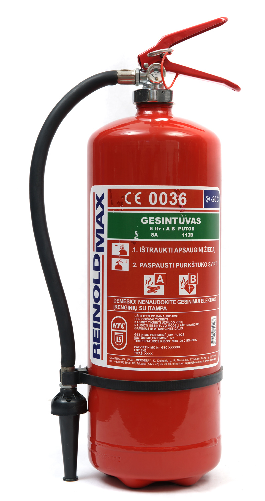
Šildomoms patalpoms
Veikimo temperatūra nuo +5°C iki +60°C
- 6 l gesintuvas48,55 €
- 9 l gesintuvas80,00 €
Naujos kartos gesintuvas šaldančių / impregnuojančių putų pagrindu idealiai tinka B klasės gaisrams gesinti - degiesiems skysčiams: benzinui, spiritui, lakui, tepalams. Efektyviai gesina ir dažniausiai pasitaikančius A klasės gaisrus - įprastas medžiagas: medieną, popierių, tekstilę, gumą ar plastmasę. Tinka elektros prietaisams gesinti.
Vandens putų gesintuvo pagrindas - AFFF putos, kurių užpurškus ant gaisro židinio akimirksniu susidaro vandens plėvelė, atskirianti deguonį ir blokuojanti pakartotinį užsidegimą. Sudėtyje nėra toksinių medžiagų, todėl gesintuvas idealiai tinka naudoti patalpų viduje, o putos veikia ir kaip impregnatorius, užkertantis kelią pakartotiniam gaisrui. Purškimo srovė 4-5 metrai leidžia ugnį sutramdyti iš saugaus atstumo.
Gaminami dviejų tipų vandens putų gesintuvai, kurie skiriasi veikimo temperatūros ribomis: šildomoms patalpoms rekomenduojame gesintuvą, veikiantį nuo +5°C iki +60°C, o nešildomoms patalpoms - specialų gesintuvą ReinoldMax, veikiantį nuo -20°C iki +60°C.

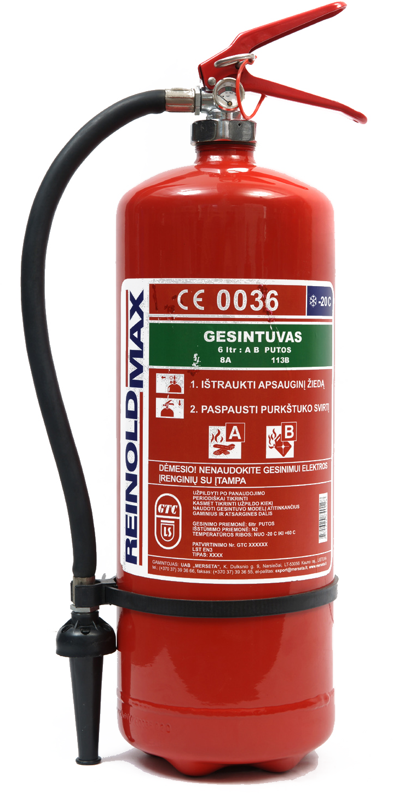
Gesintuvai gaminami dviejų tipų, kurie skiriasi veikimo temperatūros ribomis, abu 6 l ir 9 l talpos. Atitinka LST EN 3-7:2004 standartą.

Veikimo temperatūra nuo +5°C iki +60°C
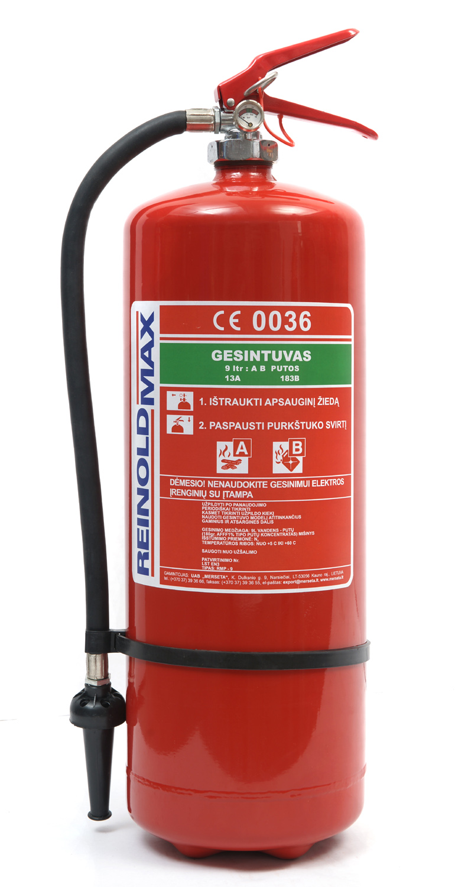
Veikimo temperatūra nuo -20°C iki +60°C
| Talpa | Užpildo svoris | Bendras gesintuvo svoris | Gesinimo medžiaga | Gesinimo efektyvumas | Veikimo trukmė | Išstūmimo priemonė | Kaina |
|---|---|---|---|---|---|---|---|
| 6 l | 6 kg | 10,10 kg | AFFF putos | 8A 113B | 20 sek. | N2 | nuo 48,55 € |
| 9 l | 9 kg | 14,60 kg | AFFF putos | 13A 183B | 28 sek. | N2 | nuo 75,00 € |
Visų gesintuvų paleidimo būdas yra panašus: nutraukite plombą ir ištraukite apsauginį kaištį, gesintuvo žarnelę su difuzoriumi nukreipkite į gaisro židinį ir nuspauskite rankenėlę. Purkškite į gaisro židinį, o ne į liepsnas, ir nesistenkite išpurkšti visų putų iš karto - gesindami vandens putų gesintuvu padarykite kelių sekundžių pertrauką, kad pamatytumėte, kur gesinti reikia labiausiai. Nepertraukiamas gesintuvo veikimo laikas - apie 20 sekundžių (6 l) arba apie 27-28 sekundes (9 l).
Gaisrą sukelia trys faktoriai - degioji medžiaga, kaitra ir deguonis. Gaisras užgesinamas pašalinus nors vieną iš trijų komponentų. Vandens putų gesintuvo pagrindas - AFFF putos, kurių užpurškus ant gaisro židinio akimirksniu susidaro vandens plėvelė, atskirianti deguonį ir blokuojanti pakartotinį užsidegimą.
Vandens putų gesintuvas ReinoldMax - tinkamiausias gesintuvas Jūsų namams. Klientų patogumui gaminami dviejų tipų vandens putų gesintuvai, kurie skiriasi veikimo temperatūros ribomis. Šildomoms patalpoms rekomenduojame vandens putų gesintuvą, veikiantį nuo +5°C iki +60°C. Siekiant apsaugoti nešildomas patalpas siūlome specialų vandens putų gesintuvą ReinoldMax, veikiantį nuo -20°C iki +60°C.
Sudėtyje nėra toksinių medžiagų, todėl idealiai tinka naudoti viduje. Šio tipo gesintuvai ne tik efektyviai numalšina gaisrą AFFF gesinimo putų dėka, bet yra puikūs impregnatoriai, užkertantys kelią pakartotiniam gaisrui. Purškimo srovė 4-5 metrai leis Jums iš saugaus atstumo efektyviai sutramdyti ugnį.
Apipurškus gaisro nepaliestas sienas, grindis, užuolaidas ar baldus, tiesiog nuvalykite putas ir leiskite išdžiūti. Jeigu gaisras nepalietė Jūsų daiktų, putos jiems nepakenks - to negalima pasakyti apie miltelinius gesintuvus. Vandens putų gesintuvai yra populiariausi gesintuvai Vokietijoje ir Prancūzijoje.
Po panaudojimo iškart priduokite gesintuvą naujam pripildymui. Stebėkite, kad slėgmačio rodyklė būtų žaliame fone.
Vandens putų gesintuvas nekenkia kvėpavimo takams, tad siūlome jį naudoti uždarose patalpose, kur didelė žmonių, o ypač vaikų, koncentracija: mokyklose, darželiuose, viešbučiuose, ligoninėse, poliklinikose, privačiuose namuose, biuruose. Vandens putų gesintuvu ReinoldMax galite gesinti įsiliepsnojusius veikiančius elektros prietaisus.
Kadangi gesintuvų ReinoldMax 6 l ir 9 l galimos veikimo temperatūros ribos siekia -20°C, ūkininkams siūlome vandens putų gesintuvą naudoti sandėliuose, lentpjūvėse bei žemės ūkio technikoje. Idealiai tinka degiems skysčiams gesinti (B klasės gaisrai), tad rekomenduojame šį gesintuvą cheminių medžiagų šildomiems ir nešildomiems sandėliams, degalinėms.
Milteliniai, vandens putų ir angliarūgštės: kuo jie skiriasi ir kokių klasių gaisrams tinka.
Universali ugnies gesinimo priemonė, tinkanti gesinti A, B, C, D klasės gaisrus (priklausomai nuo miltelių rūšies). Taip pat juo galima gesinti elektros įrenginius. Miltelinis gesintuvas chemiškai stabdo degimą. Šie gesintuvai efektyviai gesina ne tik A, B bei C klasių gaisrus, bet tinka gesinti ir neišjungtus elektros prietaisus, todėl juos galima vadinti universaliaisiais gesintuvais, galinčiais puikiai padėti apsisaugoti nuo gaisro jūsų namuose.
Pagrindinė gesinimo medžiaga - putos, t. y. oro, vandens ir putokšlio (putodario) mišinys. Tinka gesinti A klasės (degant kietoms medžiagoms susidaro įkaitusios anglys) ir B klasės (dega degūs skysčiai ar medžiagos, kurios degdamos skystėja) gaisrus. Tradiciniu vandens putų gesintuvu negalima gesinti dujų ir elektros įrenginių, jį būtina laikyti šildomose patalpose.
Pagrindinė gesinimo medžiaga - anglies dioksidas. Gesina B ir C klasės (dega degios dujos) gaisrus, tinka elektros įrenginių gesinimui. Mažai veiksmingas gesinant A ir D klasės (dega degūs metalai) gaisrus. Gesintuvai su angliarūgštės užpildu rekomenduojami elektros gaisrams gesinti (kompiuterių, jungiklių, garso įrangos, įvairių mechanizmų gaisrams). Gesinimo medžiaga pilnai išsisklaido ore ir nepalieka jokių pėdsakų. Šio tipo gesintuvai taip pat gali būti naudojami B klasės gaisrams - degiems skysčiams arba skystėjančioms medžiagoms (benzinui, naftos produktams, riebalams, lakams, dervai, vaškui, eteriui, alkoholiui ir kt.) gesinti. Rekomenduojama papildomai turėti vandens putų arba miltelinius gesintuvus, kurie užtikrintų apsaugą nuo A klasės gaisrų.
5 pogrupiai, 16 pozicijų. Kortelėse pateikiami pagrindiniai duomenys, išsamūs aprašymai išskleidžiami po kiekvienu pogrupiu.
Milteliniai gesintuvai ReinoldMax, užpildyti gesinimo milteliais monoamonio fosfato pagrindu, tinka visų tipų gaisrams gesinti: A klasės (mediena, popierius, guma, plastmasė, tekstilė), B klasės (benzinas, spiritas, lakas, tepalai) ir C klasės (degančios dujos). Tinka gesinti elektros įrenginius su iki 1 000 V įtampa, veikia esant temperatūrai nuo -30°C iki +60°C.
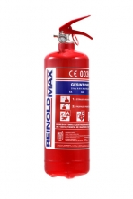
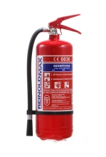
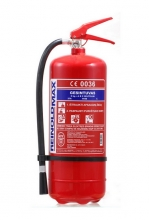
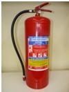
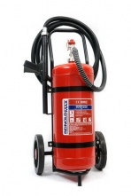
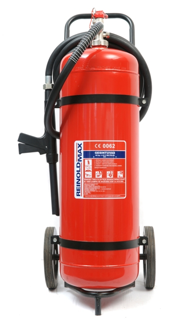
Automobilinis gesintuvas su patogiu tvirtinimo laikikliu. Pagal Lietuvos įstatymus kiekvienas vairuotojas privalo turėti 2 kg gesintuvą savo transporto priemonėje.
Automobilinis gesintuvas ReinoldMax, užpildytas gesinimo milteliais monoamonio fosfato pagrindu, tinka visų tipų gaisrams gesinti. A gaisrų klasė - dažniausiai pasitaikantys gaisrai, kai dega įprastos medžiagos: mediena, popierius, guma, plastmasė ar tekstilė. B gaisrų klasė - degantys skysčiai: benzinas, spiritas, lakas ar tepalai. C gaisrų klasė - degančios dujos: vandenilis, acetilenas, angliavandeniliai. Tinka gesinti elektros įrenginius su iki 1 000 V įtampa.
Visų gesintuvų paleidimo būdas yra panašus: nutraukite plombą ir ištraukite apsauginį kaištį, difuzorių nukreipkite į gaisro židinį ir nuspauskite rankenėlę. Gesindami milteliniu gesintuvu ReinoldMax nedarykite pertraukų, o visą turinį išpurškite į gaisro židinį vienu rankenėlės nuspaudimu. Gesintuvo veikimo laikas tik 6 sekundės, todėl gesinkite gaisro židinį, o ne liepsnas.
Gaisrą sukelia trys faktoriai - degioji medžiaga, kaitra ir deguonis. Gaisras užgesinamas pašalinus nors vieną iš trijų komponentų. Miltelinio gesintuvo ReinoldMax pagrindas - ABC gesinimo milteliai, kurių užpurškus ant gaisro židinio liepsna „uždusinama“ ir taip atskiriamas deguonis. Jeigu gaisras didesnis, gesinkite vienu metu keliais ReinoldMax gesintuvais.
Pagal Lietuvos įstatymus kiekvienas vairuotojas privalo turėti 2 kg gesintuvą savo transporto priemonėje. Miltelinis gesintuvas ReinoldMax dėl savo aukšto veiksmingumo yra populiariausias automobilinis gesintuvas Lietuvoje.
Milteliniai gesintuvai efektyviai numalšina visų tipų gaisrus ir veikia minusinėje temperatūroje nuo -30°C. Gesindami gaisrą automobilio viduje nepamirškite, kad visi milteliniai gesintuvai sudaro toksinį dulkių debesį, tad pasistenkite neįkvėpti miltelių, o po gesinimo gerai išvėdinkite automobilio vidų ir nusiplaukite rankas. Gesinimo milteliai netirpsta vandenyje, todėl salono vidų patartina gerai išsiurbti, o turinį iškart pašalinti. ReinoldMax 2 kg gesintuvas turi patogų tvirtinimo laikiklį, tad UAB „Geslita“ pataria gesintuvą gerai pritvirtinti automobilyje, kad išvengtumėte netikėto miltelių išsipurškimo stabdant.
Po gesinimo praėjus kelioms minutėms gali būti, kad gesinimo milteliai užkimš purkštuką, todėl net jeigu neišpurškėte viso turinio, nedelsdami priduokite gesintuvą naujam pripildymui. Stebėkite, kad slėgmačio rodyklė būtų žaliame fone.
Miltelinis gesintuvas ReinoldMax 2 kg idealiai tinka automobiliniams gaisrams malšinti - didžioji dauguma vairuotojų jau pasirinko ReinoldMax savo transporto priemonei apsaugoti. Kaip papildomą gaisrų gesinimo priemonę rekomenduojame ReinoldMax 1000 ml, kuri akimirksniu užgesina visų tipų gaisrus, veikia minusinėje temperatūroje bei yra daugkartinio naudojimo. Jei tektų malšinti gaisrą lauke, gesinkite tik pavėjui.
Miltelių gesintuvas ReinoldMax 2 kg atitinka LST EN 3-6:1999/A1:1999 ir LST EN 3-7:2006 privalomuosius reikalavimus.
Rekomenduojamas visuomeninės paskirties patalpoms, statomiems pastatams, sandėliams, autobusams, krovininiams automobiliams, kombainams, garažams.
Miltelinis gesintuvas ReinoldMax, užpildytas gesinimo milteliais monoamonio fosfato pagrindu, tinka visų tipų gaisrams gesinti. A gaisrų klasė - dažniausiai pasitaikantys gaisrai, kai dega įprastos medžiagos: mediena, popierius, guma, plastmasė ar tekstilė. B gaisrų klasė - degantys skysčiai: benzinas, spiritas, lakas ar tepalai. C gaisrų klasė - degančios dujos: vandenilis, acetilenas, angliavandeniliai. Tinka gesinti elektros įrenginius su iki 1 000 V įtampa.
Visų gesintuvų paleidimo būdas yra panašus: nutraukite plombą ir ištraukite apsauginį kaištį, gesintuvo žarnelę su difuzoriumi nukreipkite į gaisro židinį ir nuspauskite rankenėlę. Gesindami milteliniu gesintuvu ReinoldMax nedarykite pertraukų, o visą turinį išpurškite į gaisro židinį vienu rankenėlės nuspaudimu. Gesintuvo veikimo laikas 15 sekundžių, todėl esant rimtam gaisrui gesinkite gaisro židinį, o ne liepsnas.
Gaisrą sukelia trys faktoriai - degioji medžiaga, kaitra ir deguonis. Gaisras užgesinamas pašalinus nors vieną iš trijų komponentų. Miltelinio gesintuvo ReinoldMax pagrindas - ABC gesinimo milteliai, kurių užpurškus ant gaisro židinio liepsna „uždusinama“ ir taip atskiriamas deguonis. Jeigu gaisras didesnis, gesinkite vienu metu keliais ReinoldMax gesintuvais.
Miltelinis gesintuvas ReinoldMax dėl aukšto veiksmingumo ir teisingos kainos yra populiariausias gesintuvas Lietuvoje. Šio tipo gesintuvai efektyviai numalšina visų tipų gaisrus ir veikia minusinėje temperatūroje nuo -30°C. Gesindami gaisrą patalpoje ar sunkiasvorės transporto priemonės viduje žinokite, kad visi milteliniai gesintuvai sudaro toksinį dulkių debesį, tad pasistenkite neįkvėpti miltelių ir po gesinimo gerai išvėdinkite patalpas. Gesinimo milteliai netirpsta vandenyje, todėl patartina juos gerai susiurbti dulkių siurbliu, o turinį iškart pašalinti.
Po gesinimo praėjus kelioms minutėms gali būti, kad gesinimo milteliai užkimš purkštuką, todėl net jeigu neišpurškėte viso turinio, nedelsdami priduokite gesintuvą naujam pripildymui. Stebėkite, kad slėgmačio rodyklė būtų žaliame fone.
Kartu su ReinoldMax 4 kg gesintuvu rekomenduojame įsigyti patvarų metalinį laikiklį, skirtą tvirtinti vilkikuose, autobusuose, troleibusuose, traktoriuose ar kombainuose. Laikiklio apačioje ir viršuje įmontuotos guminės atramėlės, kurios užtikrina gesintuvo stabilumą autotransporto priemonėje. Gesintuvas fiksuojamas dviem tvirtais diržais, kurie susegami reguliuojamomis metalinėmis sagtelėmis. UAB „Geslita“ pataria gesintuvą gerai pritvirtinti, kad išvengtumėte netikėto miltelių išsipurškimo stabdant ar sužeidimų.
Miltelinis gesintuvas ReinoldMax 4 kg rekomenduojamas naudoti visuomeninės paskirties patalpose, statomų pastatų viduje, šildomuose ir nešildomuose sandėliuose, autobusuose, krovininiuose automobiliuose, kombainuose, garažuose.
Miltelių gesintuvas ReinoldMax 4 kg atitinka LST EN 3-6:1999/A1:1999 ir LST EN 3-7:2006 privalomuosius reikalavimus.
Gesinimo bandymais įrodyta, kad ReinoldMax 6 kg užgesina 9 kg miltelinio gesintuvo gaisro židinius.
Miltelinis gesintuvas ReinoldMax, užpildytas gesinimo milteliais monoamonio fosfato pagrindu, tinka visų tipų gaisrams gesinti. A gaisrų klasė - dažniausiai pasitaikantys gaisrai, kai dega įprastos medžiagos: mediena, popierius, guma, plastmasė ar tekstilė. B gaisrų klasė - degantys skysčiai: benzinas, spiritas, lakas ar tepalai. C gaisrų klasė - degančios dujos: vandenilis, acetilenas, angliavandeniliai. Tinka gesinti elektros įrenginius su iki 1 000 V įtampa.
Visų gesintuvų paleidimo būdas yra panašus: nutraukite plombą ir ištraukite apsauginį kaištį, gesintuvo žarnelę su difuzoriumi nukreipkite į gaisro židinį ir nuspauskite rankenėlę. Gesindami milteliniu gesintuvu ReinoldMax nedarykite pertraukų, o visą turinį išpurškite į gaisro židinį vienu rankenėlės nuspaudimu. Gesinimo bandymais įrodyta, kad ReinoldMax 6 kg užgesina 9 kg miltelinio gesintuvo gaisro židinius. Gesintuvo veikimo laikas 20 sekundžių. Esant rimtam gaisrui gesinkite gaisro židinį, o ne liepsnas.
Po gesinimo praėjus kelioms minutėms gali būti, kad gesinimo milteliai užkimš purkštuką, todėl net jeigu neišpurškėte viso turinio, nedelsdami priduokite gesintuvą naujam pripildymui. Stebėkite, kad slėgmačio rodyklė būtų žaliame fone.
Gaisrą sukelia trys faktoriai - degioji medžiaga, kaitra ir deguonis. Gaisras užgesinamas pašalinus nors vieną iš trijų komponentų. Miltelinio gesintuvo ReinoldMax pagrindas - ABC gesinimo milteliai, kurių užpurškus ant gaisro židinio liepsna „uždusinama“ ir taip atskiriamas deguonis. Jeigu gaisras didesnis, gesinkite vienu metu keliais ReinoldMax gesintuvais.
Miltelinis gesintuvas ReinoldMax dėl aukšto veiksmingumo ir teisingos kainos yra populiariausias gesintuvas Lietuvoje. Šio tipo gesintuvai efektyviai numalšina visų tipų gaisrus ir veikia minusinėje temperatūroje nuo -30°C. Gesindami gaisrą patalpoje ar sunkiasvorės transporto priemonės viduje žinokite, kad visi milteliniai gesintuvai sudaro toksinį dulkių debesį, tad pasistenkite neįkvėpti miltelių ir po gesinimo gerai išvėdinkite patalpas. Gesinimo milteliai netirpsta vandenyje, todėl patartina juos gerai susiurbti dulkių siurbliu, o turinį iškart pašalinti.
Kartu su ReinoldMax 6 kg gesintuvu rekomenduojame įsigyti patvarų metalinį laikiklį, skirtą tvirtinti vilkikuose, autobusuose, troleibusuose, traktoriuose ar kombainuose. Laikiklio apačioje ir viršuje įmontuotos guminės atramėlės, kurios užtikrina gesintuvo stabilumą autotransporto priemonėje. Gesintuvas fiksuojamas dviem tvirtais diržais, kurie susegami reguliuojamomis metalinėmis sagtelėmis. UAB „Geslita“ pataria gesintuvą gerai pritvirtinti, kad išvengtumėte rimtų sužeidimų ar netikėto miltelių išsipurškimo stabdant.
Miltelinis gesintuvas ReinoldMax 6 kg rekomenduojamas naudoti visuomeninės paskirties patalpose, statomų pastatų viduje, šildomuose ir nešildomuose sandėliuose, autobusuose, krovininiuose automobiliuose, kombainuose, garažuose.
Miltelių gesintuvas ReinoldMax 6 kg atitinka LST EN 3-6:1999/A1:1999 ir LST EN 3-7:2006 privalomuosius reikalavimus.
Milteliniai gesintuvai ReinoldMax skirti kietoms degioms medžiagoms, dažniausiai organinės prigimties, kurių degimo metu susidaro žarijos (A klasės gaisrams), degiems skysčiams ar medžiagoms, turinčioms savybę lydytis (B klasės gaisrams), ir dujoms (C klasės gaisrams) gesinti. Leidžiama gesinti elektros įrenginius, kurių įtampa ne didesnė kaip 1 000 voltų. Gesintuvai naudojami, kai aplinkos temperatūra ne žemesnė kaip -30°C ir ne aukštesnė kaip +60°C.
Milteliniai gesintuvai ReinoldMax skirti kietoms degioms medžiagoms, dažniausiai organinės prigimties, kurių degimo metu susidaro žarijos (A klasės gaisrams), degiems skysčiams ar medžiagoms, turinčioms savybę lydytis (B klasės gaisrams), ir dujoms (C klasės gaisrams) gesinti. Leidžiama gesinti elektros įrenginius, kurių įtampa ne didesnė kaip 1 000 voltų. Gesintuvai naudojami, kai aplinkos temperatūra ne žemesnė kaip -30°C ir ne aukštesnė kaip +60°C.
Gesintuvai su angliarūgštės (CO₂) užpildu rekomenduojami elektros gaisrams gesinti - kompiuterių, jungiklių, garso įrangos, įvairių mechanizmų gaisrams. Gesinimo medžiaga pilnai išsisklaido ore ir nepalieka jokių pėdsakų. Šio tipo gesintuvai taip pat gali būti naudojami B klasės gaisrams - degiems skysčiams arba skystėjančioms medžiagoms (benzinui, naftos produktams, riebalams, lakams, dervai, vaškui, eteriui, alkoholiui ir kt.) gesinti. Rekomenduojama papildomai turėti vandens putų arba miltelinį gesintuvą, kuris užtikrintų apsaugą nuo A klasės gaisrų. Siūlome dviejų dydžių angliarūgštės gesintuvus: 2 kg ir 5 kg.
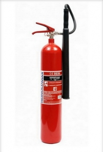
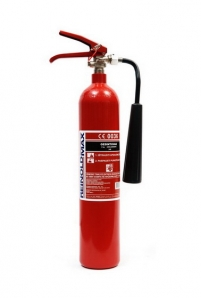
Vandens putų gesintuvų pagrindinė gesinimo medžiaga - putos, t. y. oro, vandens ir putokšlio mišinys. Siūlome VPG-2 riebalų (F klasės) gaisrams ir naujos kartos Lietuvoje pagamintus 6 l bei 9 l AFFF putų gesintuvus, kurie tinka ir elektros prietaisams gesinti.
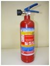
Automatinis miltelinis gesintuvas 6 kg su ABC gesinimo milteliais. Gesinimo diametras - 3 metrai. Veikimą galite pamatyti vaizdo įraše.
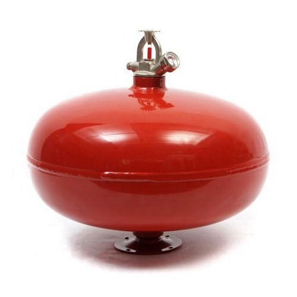
Automatinis ugnies gesintuvas 6 kg - veikimo demonstracija vaizdo įraše.
Vaizdo įrašas atidaromas „YouTube“ svetainėje naujame lange.
Tvirtinimo laikikliai transporto priemonėms ir papildomos gesinimo priemonės - kainų teiraukitės.
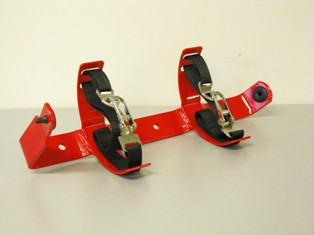
Patvarus metalinis laikiklis, kurį rekomenduojame įsigyti kartu su 4 kg ir 6 kg gesintuvais. Guminės atramėlės užtikrina gesintuvo stabilumą autotransporto priemonėje, o du diržai patikimai fiksuoja gesintuvą, kad išvengtumėte netikėto miltelių išsipurškimo stabdant ar sužeidimų.
Papildoma gesinimo priemonė automobiliui - akimirksniu užgesina visų tipų gaisrus.
Atliekame visų rūšių ir tipų ugnies gesintuvų patikrą, pildymą ir techninį aptarnavimą visoje Lietuvoje. Po panaudojimo gesintuvą priduokite naujam pripildymui.

Paskambinkite arba parašykite: aptarsime įrangos kiekį, terminus ir paruošime pasiūlymą.